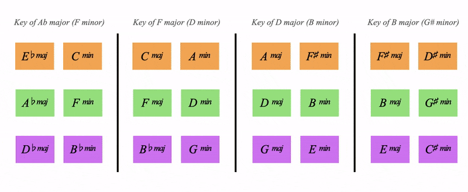

COLOURS:
Learning outcomes: To begin understanding key changes
Q: How do we change keys?
There is no end to answering this question but metaharmony provides a road into the infinite
so we left off from the last page understanding that all purples and greens are dominant and subdominant to the key of C
and we had this chart:
But where are all the other orange major and minor chords?
And what do they do?
They're doing two things:
1. They're providing key changes (our focus today)
2. They're providing secondary dominants (which we'll cover in one of the advanced colour pages)
and all purples are dominant and all greens are subdominant,
Then it follows that all oranges are tonics
We need to get more familiar with this hypercube layout:
This is a flattened out hypercube which we will understand in the geometry section of the website
But we dont need to understand the hypercube to grasp and use this chart
All the major and minor chords layed out in their colour families
Orange in the middle, Purple on top, Green belowBut they're also organised into 4 blocks
Each block represents a key
This block here has the 6 major and minor chords of C major in it, this block is the key of C major:
(2nd from the right in the chart above)
Looking back to the full chart we can see 4 keys for each of the orange chords
Notice how the layout of the chords is the same, the V is always above the I for example
Essentially we have:
These 4 keys share a deep relationship, they share their harmony
Firstly they share all of their dominants
Remember from the last page how C major has the regular dominant (G), the tritone sub (Db), the backdoor dominant (Bb) and the dominant of minor (E)
Notice below how all 4 orange keys share these dominants
See how it's:
- The regular dominant of C major
- The backdoor dominant of A major
- The tritone sub of Gb major
- The dominant of the minor of Eb major
Let's start in the key of C, do a backdoor 251 but resolve the Bb as a tritone sub into the key of A major

How cool is that?
This harmonic sharing is also applied to the subdominants
A landscape of keys that share their harmony through colour
I'm interested in navigating through this landscape in a sensitive and musical way
Which is the goal of the Cook Book
in the orange hypercube:
- All purples are dominant
- All greens are subdominant
- All oranges are tonics (key changes)
What if we're playing a song in the key of Ab?
We need a green hypercube for all the green keys:
And a purple hypercube for all the purple keys:
The 3 hypercubes cover all 12 keys
and we'll dive into this more in the geometry section of the website
but this means we can do all the beautful key weaving we did in the orange hypercube
but also for green keys and purple keys

Above is the progression we did in C major (previous audio clip) but in the green hypercube in the key of D
Now we can play in any key by using the 3 hypercubes
"Which of the 12 keys are we in?
We're either in the orange, green or purple hypercube"
Think of it like 3 containers, each holding 4 keys
We can also change between keys of the same colour by staying in one hypercube (as above)
"Let's change from the key of E to the key of Bb
We'll be moving in the purple hypercube"
How do we modulate from one hypercube to another?
What if we want to go from a green key into a purple key?
We'll cover this in an advanced colour page and also in the geometry pages
and of course in the cook book
But for now we've covered the essentials of the colour system:
- Orange keys Share their dominants and subdominants
- Green keys Share their dominants and subdominants
- Purple keys Share their dominants and subdominants
We've understood harmonic function on the colour wheel
What about chord extensions and melodic movement?
We're ready for complimentary colours
Back to Functions 1 | Continue to Complimentary Colours